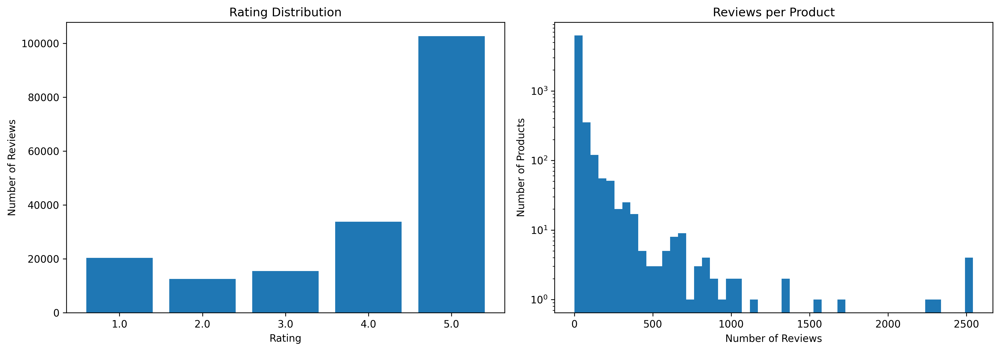
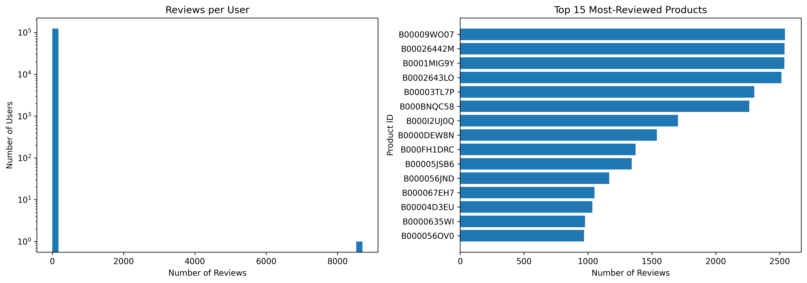
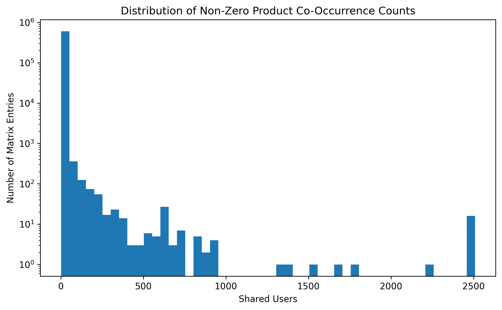
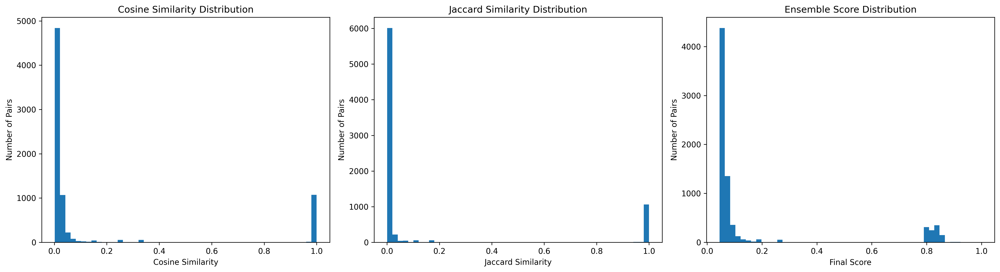
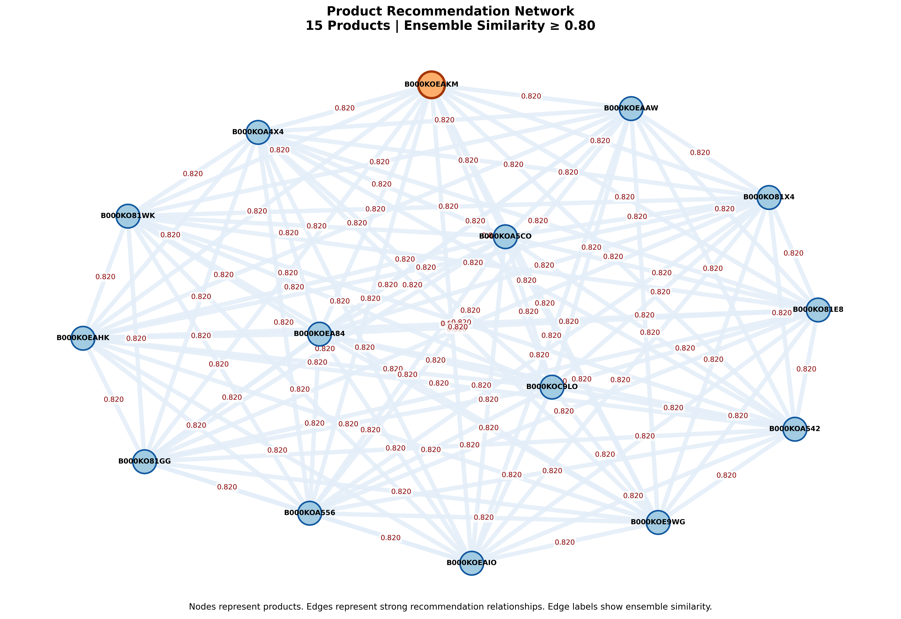

Rating Distribution and Reviews per Product
The first plot shows how many reviews fall under each rating, while the second shows the distribution of review counts across products. The product-review histogram uses a logarithmic vertical axis to make less frequent and highly reviewed products easier to compare.
Together, these plots help assess rating patterns and whether review activity is concentrated among a small number of products. The exact shape and dominant rating should be described after checking the generated image.

User Activity and Product Popularity
The left plot shows the number of reviews written by each user. The right plot ranks the 15 products with the highest number of reviews. A logarithmic scale is used for user activity to make differences between low- and high-activity users visible.
These plots reveal how engagement is distributed across users and products. They can help identify whether the dataset contains a long tail of users with few reviews alongside a smaller group of highly active users, and whether a few products receive substantially more reviews than others.

Product–Product Co-occurrence
The co-occurrence matrix counts how many distinct users interacted with each pair of products. The histogram displays the non-zero co-occurrence counts, with a logarithmic vertical axis.
Most product pairs may share relatively few users, while a smaller number have stronger overlap. This matrix forms the basis for finding related products; it measures shared-user behaviour, not semantic similarity between product descriptions.

Hybrid Product Similarity Scores
Three score distributions are compared: Cosine Similarity, Jaccard Similarity, and the final ensemble score. Cosine Similarity captures overlap relative to the interaction counts of each product, while Jaccard Similarity measures shared users relative to the union of users for the pair.
The final score combines Cosine Similarity (weight 0.45), Jaccard Similarity (weight 0.30), and a log-scaled support score based on the number of shared users (weight 0.25). Only pairs with at least three shared users are considered by the configured pair-scoring step.

Product Recommendation Network
The network visualizes a selection of products as nodes. Edges connect product pairs whose ensemble similarity meets the threshold used to build the graph, and edge labels display the similarity score. The input product is highlighted when one is supplied.
The code starts with a threshold of 0.80 and gradually lowers it in steps of 0.05 if needed, down to 0.50, to find related products. This visualization makes it easier to inspect groups of strongly related products and compare the strength of their relationships.
Anomalies, observations and patterns
- Interaction sparsity: The user–product matrix is built from observed user–product interactions, so most possible user–product combinations are unobserved. The code reports the matrix sparsity when it runs.
- Uneven activity: The user-activity and product-popularity plots help assess whether reviews are concentrated among a smaller number of users or products. Confirm the specific pattern from the generated graphs.
- Shared-user signal: Product co-occurrence identifies products reviewed by overlapping groups of users. A higher count means more shared users, but does not by itself prove that the products are substitutes or semantically similar.
- Hybrid ranking: Combining cosine, Jaccard, and support scores balances normalized overlap with evidence from the number of shared users.
- Threshold effect: The recommendation network may become less connected at higher similarity thresholds. The plotting function relaxes the threshold in steps if the selected product has too few related products.